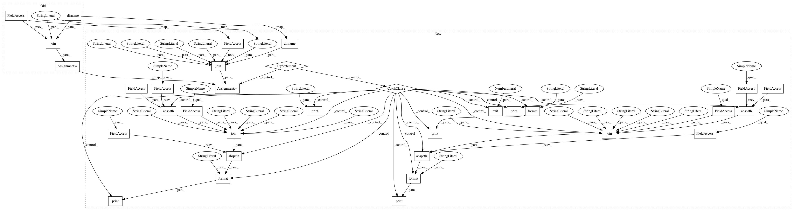

614ff7af666ecaab6dfa42f7377ec4c1608b1ff6,aif360/datasets/meps_dataset_panel20_fy2015.py,MEPSDataset20,__init__,#MEPSDataset20#,75
Before Change
na_values=[], custom_preprocessing=default_preprocessing,
metadata=default_mappings):
filepath = os.path.join(os.path.dirname(os.path.abspath(__file__)),
"../data/raw/meps/h181.csv")
df = pd.read_csv(filepath, sep=",", na_values=na_values)
super(MEPSDataset20, self).__init__(df=df, label_name=label_name,
favorable_classes=favorable_classes,
protected_attribute_names=protected_attribute_names,
After Change
na_values=[], custom_preprocessing=default_preprocessing,
metadata=default_mappings):
filepath = os.path.join(os.path.dirname(os.path.abspath(__file__)),
"..", "data", "raw", "meps", "h181.csv")
try:
df = pd.read_csv(filepath, sep=",", na_values=na_values)
except IOError as err:
print("IOError: {}".format(err))
print("To use this class, please follow the instructions in:")
print("\n\t{}\n".format(os.path.abspath(os.path.join(
os.path.abspath(__file__), "..", "..", "data", "raw", "meps", "README.md"))))
print("\n to download and convert the 2015 data and place the final h181.csv file, as-is, in the folder:")
print("\n\t{}\n".format(os.path.abspath(os.path.join(
os.path.abspath(__file__), "..", "..", "data", "raw", "meps"))))
import sys
sys.exit(1)
super(MEPSDataset20, self).__init__(df=df, label_name=label_name,
favorable_classes=favorable_classes,
protected_attribute_names=protected_attribute_names,
privileged_classes=privileged_classes,
In pattern: SUPERPATTERN
Frequency: 3
Non-data size: 33
Instances
Project Name: IBM/AIF360
Commit Name: 614ff7af666ecaab6dfa42f7377ec4c1608b1ff6
Time: 2018-09-14
Author: hoffman.sc@gmail.com
File Name: aif360/datasets/meps_dataset_panel20_fy2015.py
Class Name: MEPSDataset20
Method Name: __init__
Project Name: IBM/AIF360
Commit Name: 614ff7af666ecaab6dfa42f7377ec4c1608b1ff6
Time: 2018-09-14
Author: hoffman.sc@gmail.com
File Name: aif360/datasets/meps_dataset_panel20_fy2015.py
Class Name: MEPSDataset20
Method Name: __init__
Project Name: IBM/AIF360
Commit Name: 614ff7af666ecaab6dfa42f7377ec4c1608b1ff6
Time: 2018-09-14
Author: hoffman.sc@gmail.com
File Name: aif360/datasets/meps_dataset_panel21_fy2016.py
Class Name: MEPSDataset21
Method Name: __init__
Project Name: IBM/AIF360
Commit Name: 614ff7af666ecaab6dfa42f7377ec4c1608b1ff6
Time: 2018-09-14
Author: hoffman.sc@gmail.com
File Name: aif360/datasets/meps_dataset_panel19_fy2015.py
Class Name: MEPSDataset19
Method Name: __init__